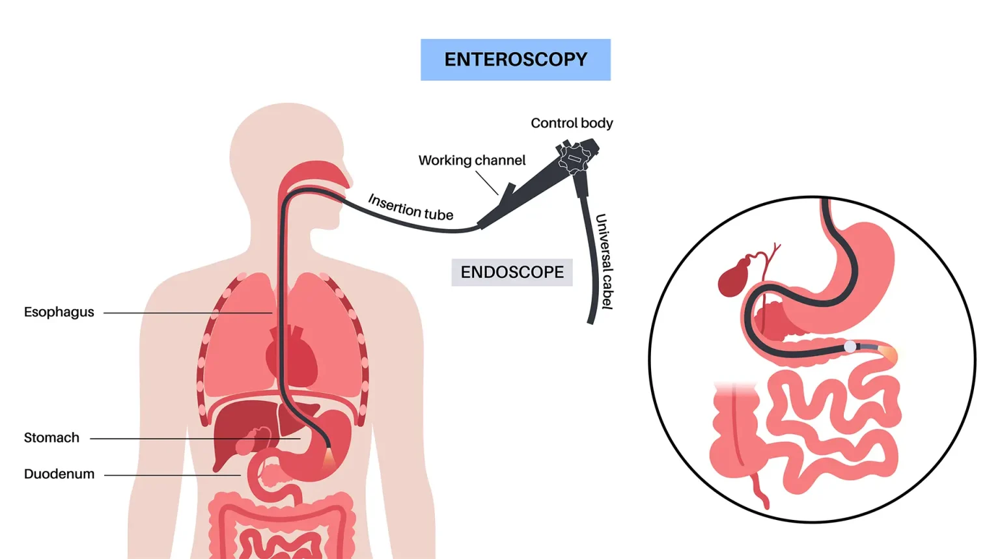
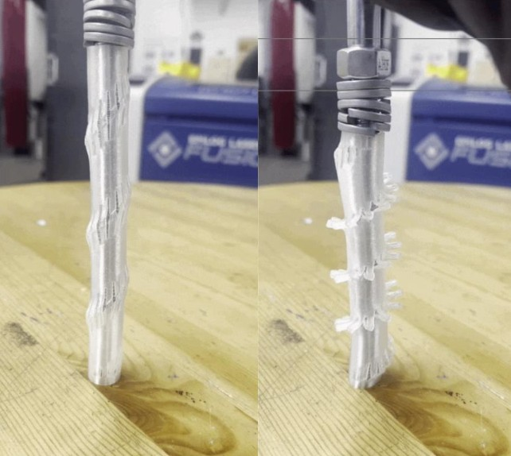
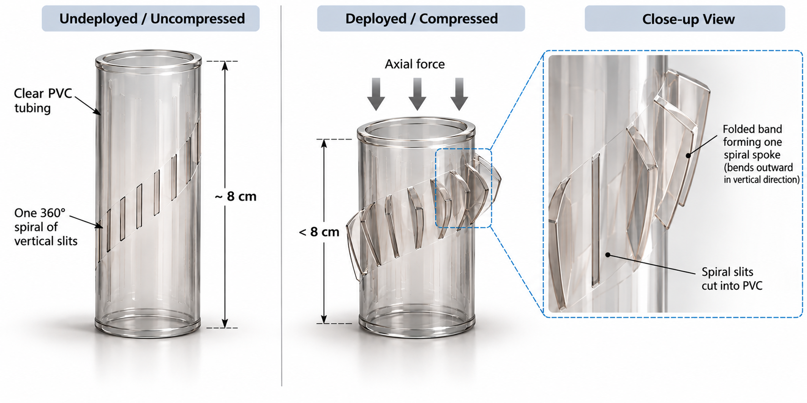

My research spans biomedical device design, computer vision, and mechanical systems, with a focus on developing technologies that interact with complex physical and biological environments.
Developing a deployable mechanical mechanism for deep enteroscopy with the goal of improving procedural safety and enabling rapid withdrawal in the event of complications while preserving the benefits of motorized spiral enteroscopy.

Overview of enteroscopy and endoscopic access to the small intestine. Image: Aliveo Mdical.
Deep enteroscopy enables access to regions of the small intestine that are difficult to reach using conventional endoscopic methods. My work focuses on developing a mechanical fail-safe concept that could allow controlled withdrawal of the device in the event of procedural complications.
Designed a deployable tubular mechanism using patterned slit geometries that transform under compression. The concept uses spiral and vertical slit patterns to create controlled radial deployment while maintaining a compact undeployed form.

Proposed deployable spiral-slit mechanism in undeployed and compressed states.

Early PVC overtube prototype demonstrating slit deployment under compression.
Evaluating flexible PVC tubing materials and wall thicknesses to understand how geometry and material properties affect deformation, deployment behavior, and mechanical response.
Developed computer vision and machine-learning tools for early identification of equine health abnormalities from video data.
Developed an optical flow-based computer vision pipeline to analyze horse movement from video footage and identify early indicators of disease.
Used vision-language models to support video analysis and worked with large-scale visual datasets in Microsoft Azure.
Built and deployed an AWS-based web application to surface model outputs and deliver horse health alerts in a format usable by the project client.
Researched and developed a thin-film transfer device for semiconductor manufacturing applications, combining mechanical design, fabrication, and small-scale prototyping.
Designed components and assemblies in Fusion 360, iterating geometry for manufacturability, mechanical integration, and compatibility with the transfer process.
Fabricated and evaluated prototype components using SLA printing and MIT.nano nanofabrication techniques, comparing multiple approaches for small-scale manufacturing.